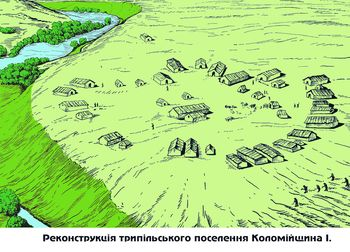
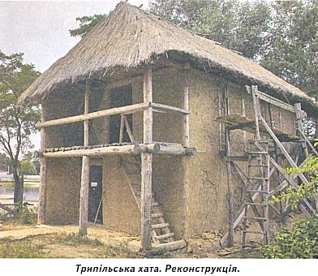
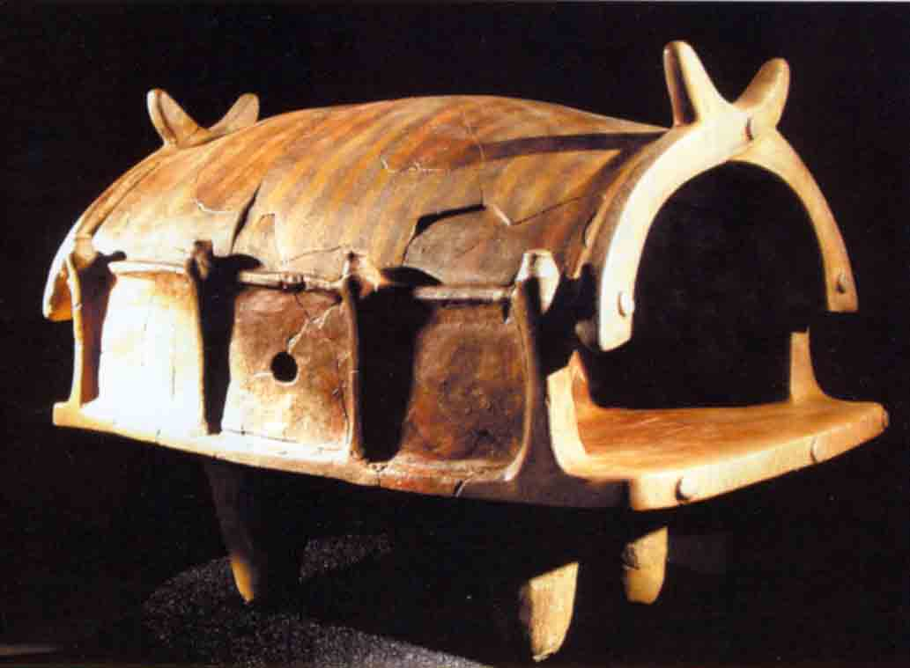
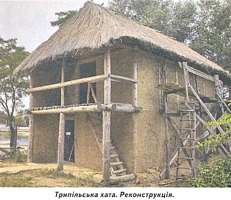
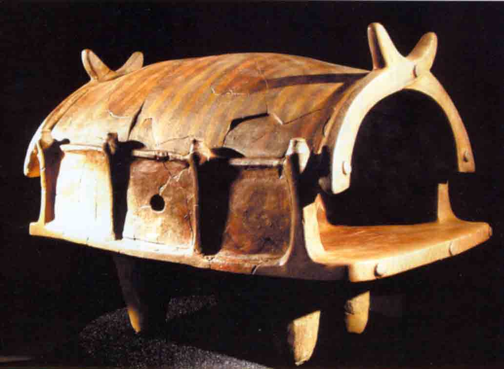

Пам'ятки України
Стародавня доба
До нової ери - Нова ераТрипільська культура

 



Цікаві факти:
Трипільська культура — один з найбільш яскравих феноменів в енеоліті Південно-Східної Європи V — ІV тис. до н.е. Пам'ятки, що її презентують, розташовані на великій території від румунської Мунтенії і Трансільванії до Дніпра з заходу на схід і від Північного Причорномор'я до Карпат з півдня на північ.
Перші пам'ятки трипільської культури були відкриті в західних областях України в середині ХІХ ст., але лише після розкопок В. ХвойкоюТальянки. Трипільський "сервіз" наприкінці ХІХ ст.
На сьогодні нам відомо за даними розвідок і розкопок більш ніж тисячу поселень трипільської культури. Частина їх вивчена на досить великій площі, а деякі (наприклад Бернашівка, Коломийщина І, Чапаївка) розкопані цілком. Отримані дані дозволили визначити характер забудови поселень, відтворити вигляд давніх жител та їх інтер'єру й, нарешті, реконструювати історію цього давньоземлеробського населення.